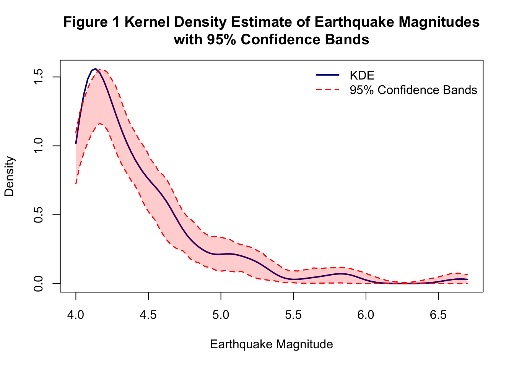

Bandwidth selection using Scott’s and Silverman’s rules
Rejection sampling techniques
Applications to housing price data
What’s new in this tutorial?
Today, we’ll take things further with two real-world applications and discussion of its application in educational field:
Seismic Analysis: Analyzing California earthquake data using KDE with simulation-based confidence bands
Regression Diagnostics: Identifying influential observations in multivariate regression
Educational Application
Learning Objectives
By the end of this tutorial, you will:
Build simulation-based confidence bands for kernel density estimates
Apply 2D kernel smoothing to spatial point patterns
Perform leave-one-out influence analysis in regression
Interpret diagnostic plots for identifying influential observations
Understand when and why these techniques matter in practice
Applications in educational research
Part 1: Earthquake Analysis with Confidence Bands
Motivation: Why Confidence Bands Matter
In our previous tutorial, we estimated densities without quantifying uncertainty. But how confident are we in our estimates?
The problem: A kernel density estimate is just one possible curve based on our sample. If we collected different earthquake data, we’d get a slightly different curve.
The solution: Simulation-based confidence bands show us the range of plausible density curves, helping us distinguish real features from sampling noise, assess estimation uncertainty, make more reliable inferences about the underlying distribution
Think of it as the difference between saying “the earthquake magnitude distribution looks like this” versus “we’re 95% confident the true distribution falls within this band.”
1.1 Loading Earthquake Data
We’re loading real seismic data from Southern California spanning over 50 years. This data comes from the Southern California Earthquake Data Center, which maintains comprehensive records of all detected earthquakes in the region. Our goal is to import this data into R and prepare it for analysis.
MAG: Earthquake magnitude (Richter or moment magnitude scale)
LAT/LON: Epicenter location
DEPTH: How deep underground the quake occurred (km)
DATETIME: When it happened
Historical context: This dataset includes the devastating 1971 San Fernando earthquake (M6.6) and the 1994 Northridge earthquake (M6.7), both of which caused significant damage in the Los Angeles area.
1.2 Kernel Density Estimation with Scott’s Rule
We’re creating a smooth density curve of earthquake magnitudes using kernel density estimation (KDE). Instead of using arbitrary histogram bins, we’ll place a Gaussian “bump” at each data point and add them up. The bandwidth (how wide each bump is) will be chosen automatically using Scott’s rule—a mathematical formula that balances smoothness with detail.
This gives us our first estimate of the magnitude distribution, which we’ll use as the foundation for building confidence bands in the next step. We’ll estimate the distribution of earthquake magnitudes using a Gaussian kernel.
This balances: - Smoothness: Larger \(h\) → smoother curve - Detail: Smaller \(h\) → more features (but possibly noise)
#extract magnitudesmagnitudes <- earthquake_data$MAG#set Scott bandwidthn <-length(magnitudes)bandwidth_scott <-1.06*min(sd(magnitudes),IQR(magnitudes)/1.34) *1000^(-.2) #or can use bw.nrd(x)#get m, vector of 100 equally spaced magnitudes spanning the observed range of magnitudesm_values <-seq(min(magnitudes), max(magnitudes), length.out =100)#compute kernel density estimates at these pointskde_original <-density(magnitudes, bw = bandwidth_scott, kernel ="gaussian",from =min(m_values), to =max(m_values), n =100)#save the kernel density estimatesf_hat_original <- kde_original$y
1.3 Simulation-Based 95% Confidence Bands
Here’s where it gets exciting! We’re going to answer the question: “How certain are we about our density estimate?” We’ll do this by:
Simulating 200 alternative datasets from our estimated density (pretending these are equally plausible datasets we could have observed)
Computing a KDE for each simulated dataset using the same bandwidth
Finding the range where 95% of these simulated curves fall
This range becomes our confidence band—showing us where the true density likely lies.
Why this matters: Without confidence bands, we don’t know if features in our density curve are real patterns or just random noise from sampling.
Now let’s quantify uncertainty!
The idea:
Our KDE is an estimate based on our sample
If we had a different sample from the same underlying distribution, we’d get a slightly different KDE
We can simulate many such “alternative samples” and see how much the KDE varies
The range containing 95% of these simulated KDEs gives us our confidence band
The algorithm:
For \(b = 1, 2, \ldots, 200\):
Resample: Draw \(n\) new magnitudes from our estimated density
For each: Pick a random observed magnitude \(X_i\), then add noise: \(X_i^* = X_i + \epsilon\) where \(\epsilon \sim N(0, h^2)\)
Re-estimate: Compute KDE using the same bandwidth
Store: Save the density values at our 100 evaluation points
Finally: At each evaluation point, find the 2.5th and 97.5th percentiles across the 200 simulations.
n_sim <-200#create a matrix to store simulated density estimtessimulated_densities <-matrix(NA, nrow = n_sim, ncol =100)#perform simulationsfor (b in1:n_sim) {#sample from the kernel density estimate sampled_indices <-sample(1:n, size = n, replace =TRUE) simulated_mags <- magnitudes[sampled_indices] +rnorm(n, mean =0, sd = bandwidth_scott)#compute KDE for simulated data using same bandwidth kde_sim <-density(simulated_mags, bw = bandwidth_scott, kernel ="gaussian", from =min(m_values), to =max(m_values), n =100) simulated_densities[b, ] <- kde_sim$y}#get the 2.5th and 97.5th percentiles for confidence bandslower_band <-apply(simulated_densities, 2, quantile, probs =0,025)upper_band <-apply(simulated_densities, 2, quantile, probs =0.975)
1.4 Visualization: Figure 1
Let’s create a publication-quality plot showing our KDE with confidence bands.
#create the plotplot(m_values, f_hat_original, type ="l", lwd =2, col ="navy",xlab ="Earthquake Magnitude", ylab ="Density",main ="Figure 1 Kernel Density Estimate of Earthquake Magnitudes\nwith 95% Confidence Bands",ylim =range(c(lower_band, upper_band, f_hat_original)))#add confidence bandslines(m_values, lower_band, lty =2, col ="red", lwd =1.5)lines(m_values, upper_band, lty =2, col ="red", lwd =1.5)#add shaded region for confidence bandspolygon(c(m_values, rev(m_values)), c(lower_band, rev(upper_band)),col =rgb(1, 0, 0, 0.2), border =NA)#add legendlegend("topright", legend =c("KDE", "95% Confidence Bands"),col =c("navy", "red"), lty =c(1, 2), lwd =c(2, 1.5),bty ="n")

1.5 Two-Dimensional Spatial Analysis
Now we shift from analyzing earthquake magnitudes to analyzing earthquake locations. We’ll create a 2D heat map showing where earthquakes cluster in space. This extends KDE from one dimension (magnitude) to two dimensions (latitude and longitude).
The math is similar, but now each earthquake contributes a 2D “bump” on a map, and we add them all up to see which areas have the highest earthquake density. This reveals fault lines and seismic hazard zones without needing any geological data—just the pattern of where earthquakes occur!
Earthquakes don’t just vary in magnitude—they cluster in space near fault lines. Let’s visualize this using 2D kernel smoothing.
We’ll use the kernel2d() function from splancs package, which is specifically designed for spatial point patterns.
#extract longitude and latitudelon <- earthquake_data$LONlat <- earthquake_data$LAT#create 2c matrix of locations for splancslocations <-cbind(lon, lat)#locations#set the boundarypoly_boundary <-cbind(c(-122, -118, -118, -122, -122),c(34, 34, 38, 38, 34))#poly_boundary#calculate bandwidth using Scott's rule for 2Dn <-nrow(locations)h_lon <-sd(lon) * n^(-1/6)h_lat <-sd(lat) * n^(-1/6)#h_lon; h_latbandwidth <-mean(c(h_lon, h_lat))#bandwidth #.2189#create grid for evaluationgrid_size <-100lon_grid <-seq(-122, -118, length.out = grid_size)lat_grid <-seq(34, 38, length.out = grid_size)#compute 2D kernel density using kernel2d from splancskde_result <-kernel2d(locations, poly_boundary, bandwidth, nx = grid_size, ny = grid_size)
Xrange is -122 -118
Yrange is 34 38
Doing quartic kernel
#extract the density matrixkde_2d <- kde_result$z#get grid coordinates from kernel2d outputlon_grid <- kde_result$xlat_grid <- kde_result$y#get California county map dataca_counties <-map_data("county", region ="california")#ca_counties#filter counties in the region of interestca_counties_filtered <- ca_counties %>%filter(long >=-122, long <=-118, lat >=34, lat <=38)
1.6 Visualization: Figure 2
Creating a beautiful map with California geography for context.
Imagine you’re advising a real estate company on pricing models. You build a regression model, and it says: “Each $1,000 increase in median home price predicts 0.5 more sales.”
But what if this entire finding hinges on just one neighborhood—say, Beverly Hills? If you removed that one data point, would your conclusion change?
The problem: Some observations have disproportionate influence on regression estimates. These influential points can:
Drive entire conclusions
Mask true relationships
Create spurious findings
The solution: Leave-one-out influence analysis quantifies how much each observation affects your estimates.
2.1 The Dataset: LA Housing Prices (August 2013)
We’re switching gears from earthquakes to economics! We’ll load housing market data from Los Angeles County and prepare it for regression analysis. Each row represents a different neighborhood, with variables measuring home prices and sales volumes.
Data cleaning task: We need to remove any rows with missing values (“n/a”) to ensure our regression analysis works properly.
We’ll analyze housing sales data from Los Angeles County during the post-recession recovery period.
Variables:
Y: Number of single-family home sales in August 2013
X1: Median single-family residence price (thousands of dollars)
X2: Median condo price (thousands of dollars)
X3: Median home price per square foot (dollars)
Research question: How does housing price affect sales volume?
Positive influence (\(> 0\)): Removing this observation increases \(\hat{\beta}_1\)
The observation was pulling the estimate downward
It’s below the general trend
Negative influence (\(< 0\)): Removing this observation decreases \(\hat{\beta}_1\)
The observation was pulling the estimate upward
It’s above the general trend
Large absolute influence: This observation substantially affects our conclusions
Let’s walk through the process for the first observation.
#set i = 1i <-1#remove ihousing_minus_i <- housing_clean[-i, ]#fit the model without imodel_minus_i <-lm(Y ~ X1 + X2 + X3, data = housing_minus_i)#extract the vector of parameter estimats beta^(-1)beta_minus_i <-coef(model_minus_i)#extract the corresponding slope of X1beta_1_minus_i <- beta_minus_i["X1"]#calcualte the influenceinfluence_i1 <- beta_1_minus_i - beta_1_fullinfluence_i1
X1
0.0006900277
What this tells us:
If the influence is small (close to 0), this observation doesn’t substantially affect our estimate. If it’s large, removing this neighborhood changes our conclusions meaningfully. It’s pretty small here.
Now let’s repeat this for all 217 observations.
n_obs <-nrow(housing_clean)#set up vector to store influencesinfluences <-numeric(n_obs)#loop through each observation from i = 1 to n_obsfor (i in1:n_obs) { housing_minus_i <- housing_clean[-i, ] model_minus_i <-lm(Y ~ X1 + X2 + X3, data = housing_minus_i) beta_1_minus_i <-coef(model_minus_i)["X1"] influences[i] <- beta_1_minus_i - beta_1_full}summary(influences)
Min. 1st Qu. Median Mean 3rd Qu. Max.
-1.195e-03 -4.790e-05 6.444e-07 3.437e-06 6.025e-05 2.310e-03
The 2D kernel density methods we applied to earthquakes have direct applications in education:
Example 1: School Achievement Hotspots
#hypothetical: Test score performance by school locationschools <-data.frame(lat = school_latitudes,lon = school_longitudes,performance = test_scores)#2D KDE reveals geographic clusters#Are high-performing schools clustered in certain neighborhoods?#Does this reflect resources, demographics, or other factors?
Example 2: College Application Patterns
Where do students from your high school apply?
Geographic diversity in higher education access
Identifying underserved regions
Example 3: Educational Intervention Planning
Where should we open new tutoring centers?
Which neighborhoods lack access to STEM programs?
Optimizing school bus routes based on student density